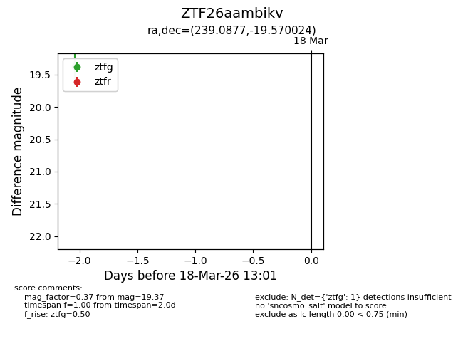
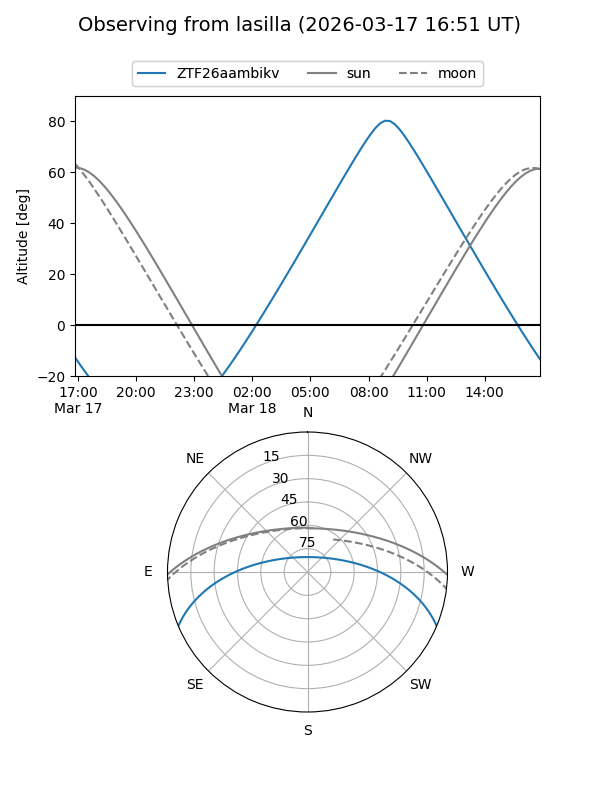
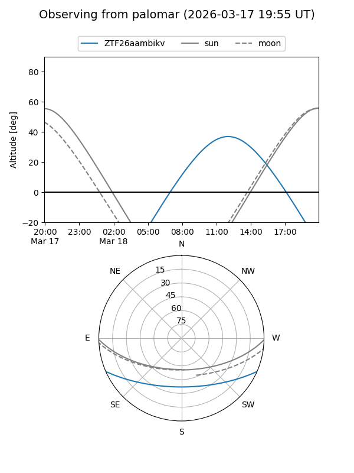

ZTF26aambikv
Target ZTF26aambikv at 2026-03-18 13:03
Aliases and brokers:
FINK: link
Lasair: link
ALeRCE: link
alt names
ZTF26aambikv (ztf,fink_ztf)
Coordinates:
equatorial (ra, dec) = 239.0877,-19.57002
equatorial (HMS+DMS) = 15:56:21.04,-19:34:12.09
galactic (l, b) = (351.7464,+25.30148)
Flags:
Photometry:
last ztfg=19.37
1 ztfg detections
Lightcurve

Visibility


Additional plots